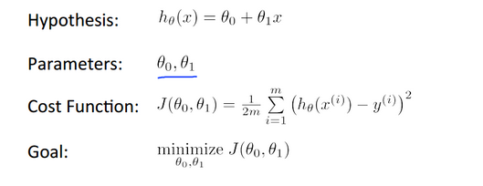
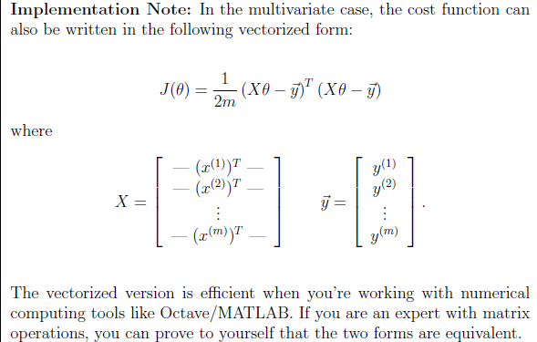
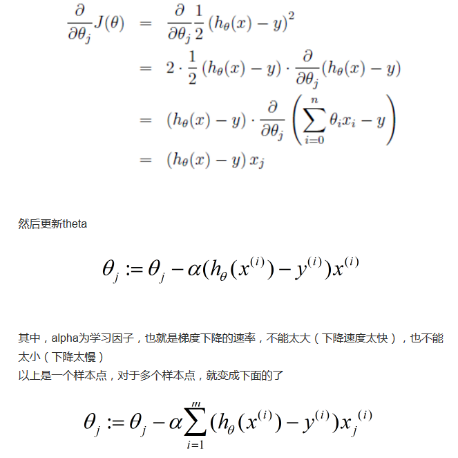
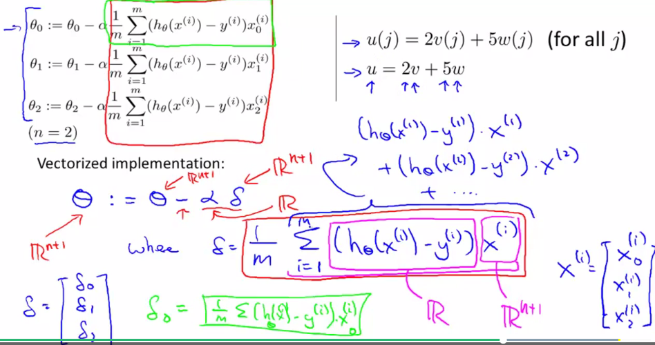
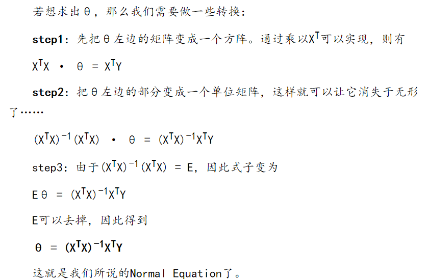

这是我的第一篇博客！ 用于记录自己的成长过程，无论是内在的状态还是技术方面的。
最近在学习吴恩达coursera的机器学习，真的非常感谢这位机器学习启蒙老师！
这只是俺的笔记方便以后自己查阅。首先看看这个文章对机器学习有个初步印象：三张图读懂机器学习：基本概念、五大流派与九种常见算法
首先我们定义出线性的hypothesis function h，然后定义出cost function J，为了使得假设函数接近或等于实际值，目标是使得函数J取最小值。

J(θ)函数实际上可以通过矩阵方式来操作：

这个图片里的文字也说了，如果熟悉矩阵乘法，这个结论很容易的出来。对矩阵乘法了解有兴趣的朋友可以自己推导下。
那么如何得到最有解？使用梯度下降法，即用每个θ的偏导数来更新θ,偏导数可理解为在一堆自变量中,针对的是某个变量求导数而其它变量可认为是常数，而这个J(θ)二阶导函数大于0是凸函数(可证明出来)，故此有全局最优解。

这里给出的是每个θj(j为小下标，键盘不好打出来,j=0,1,2….)如何更新，实际上可以不使用循环操作，用如下向量化操作减少loop操作：

这张图左上角即没用向量化的实现，图的中部即是向量化的实现方法，而右上角解释了为什么可以用这种向量化方法来实现，如果熟悉矩阵乘法可以自己展开推导下。
特征缩放 (feature scaling) 可以加快梯度下降的速度
我们可以通过让每个输入值在大致相同的范围内加速梯度下降。每个特征大致在 -1到1或者 -0.5到0.5之间(闭区间)。这有两种技术： 特征缩放(feature scaling)和均值归一化(mean normalization)。特征缩放是输入值除以范围(范围比如最大值减去最小值)，故此新的范围为1，均值归一化是减去平均值再除以平均值或方差，导致新的特征值的平均值为0。
这是公式:
x(i) - u(i)
x(i) := -----------
s(i)
其中u(i)是平均值，s(i)是范围(max-min)，或者是标准差
最后，就是如果样本量不大，比如不到几万的，可以用正规方程，直接求出参数θ：
下面是推导过程，相比于其他的推导，比如对矩阵求偏导、使用矩阵的迹来说，这种推导更容易理解，不过这种推导是在知道了正规方程是什么以后再推导的。不过对于我们理解已经足够了：
若希望H(θ)=Y，则有
X · θ = Y

好了，线性回归部分已经复习完了，下面开始复习逻辑回归。